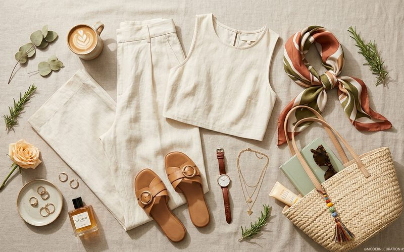

Uma boa fotografia pode ser a diferença entre uma peça que encontra nova dona rapidamente e uma que fica parada por semanas. Quando você decide consignar roupas, seja em brechós físicos como o Outra Vez, seja em plataformas digitais, a qualidade das imagens comunica diretamente o cuidado que você teve com as peças e aumenta a confiança de quem está avaliando a compra.
A boa notícia é que não são necessários equipamentos sofisticados. Com um smartphone atual, boa luz natural e algumas técnicas básicas de composição, você consegue fotografias que fazem jus à qualidade das suas peças.
A luz natural difusa, próxima a uma janela, mas sem sol direto, é a melhor iluminação possível para fotografar roupas. Ela mostra a cor real do tecido, revela texturas com fidelidade e cria sombras suaves que valorizam os detalhes de modelagem. Evite fotografar com flash, ele cria reflexos indesejados em tecidos brilhantes e achata a imagem, eliminando a tridimensionalidade da peça.
O melhor horário para fotografar é durante o dia, com luz natural entrando lateralmente pela janela. Se o dia estiver nublado, ainda melhor: a cobertura de nuvens age como um difusor natural, criando iluminação uniforme e sem sombras duras.
O fundo da foto não deve competir com a peça. Branco ou cinza claro são as escolhas mais seguras, eles também facilitam o ajuste de balanço de branco na edição, garantindo que a cor da peça apareça com fidelidade. Uma parede clara, um lençol neutro ou uma cartolina branca são suficientes para criar um fundo profissional sem investimento.
Para peças penduradas, um cabide branco ou de madeira natural é mais elegante do que arames ou cabides coloridos. Para peças dobradas ou planas (foto flat lay), uma superfície limpa e uniforme é essencial.
Para consignação, fotografe sempre frente, costas e pelo menos um detalhe relevante, a estampa, o bordado, os botões, a textura do tecido. Se houver algum detalhe diferenciador, um bolso inusitado, uma costura decorativa, uma etiqueta de marca, fotografe também. Quem está comprando a distância precisa dessas informações visuais para tomar a decisão com confiança.
Se possível, fotografe a peça vestida, mesmo que em você mesma. Uma foto vestida mostra o caimento real da peça, o comprimento em relação ao corpo e a versatilidade de combinação. Esse tipo de imagem costuma gerar muito mais interesse do que fotos planas, porque permite à compradora visualizar a peça em uso.
Fotografar bem as suas peças para consignação é um pequeno investimento de tempo que multiplica as chances de encontrar a nova dona certa, aquela que vai amar a peça tanto quanto você amou, e que vai continuar a história que você começou.